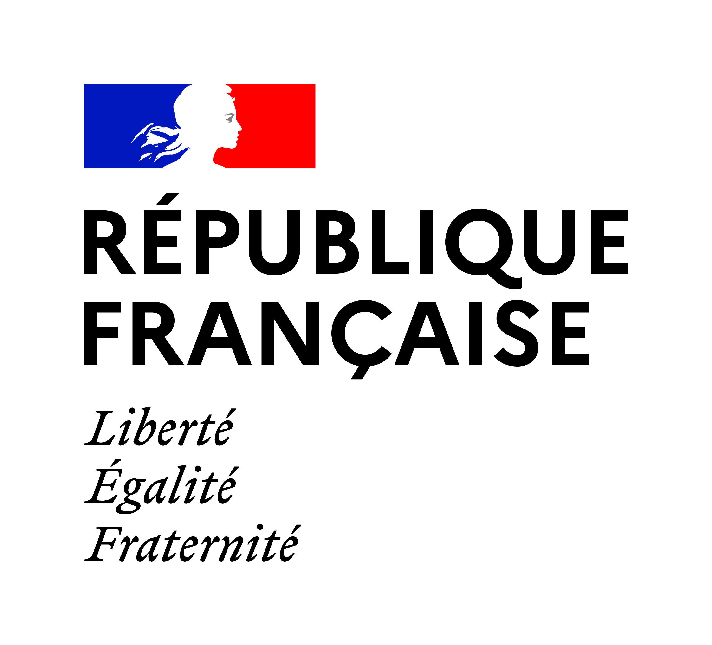
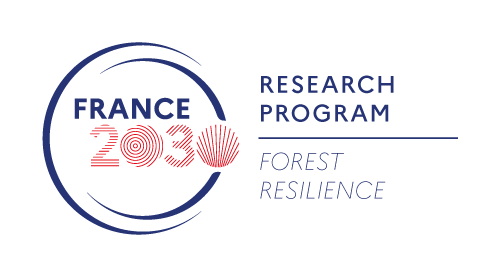
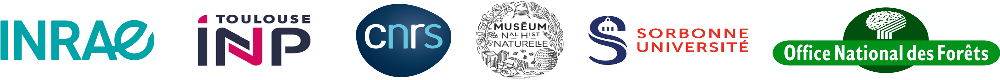

Accueil
  
Le projet MASSIF
MASSIF est un projet de recherche dédié à la surveillance et au suivi de la diversité de l’entomofaune en forêt. Il est financé dans le cadre du PEPR FORESTT (2025-2029). Il regroupe 9 unités partenaires appartenant à 6 tutelles.
Contexte
Caractériser l’effondrement actuel de la biodiversité nécessite la mise en place d’observatoires de suivi à long terme. Les insectes, qui constituent une part essentielle de la diversité, jouent un rôle majeur dans de nombreux services écosystémiques, mais certains ravageurs représentent aussi une menace pour la santé des forêts. Il n’existe à ce jour aucune solution standardisée, et des verrous technologiques freinent la mise en œuvre des dispositifs de suivi et de biosurveillance de l’entomofaune.
Objectifs
Le projet MASSIF a pour ambition de développer et de tester des solutions permettant de lever ces verrous, depuis la conception d’outils de diagnostic automatisés jusqu’à la visualisation et l’analyse des données en temps réel.
- Produire les ressources nécessaires à l’identification experte des pollinisateurs, des xylophages et des saproxylophages (collections, identification morphologique, barcodes moléculaires, base de données photographiques)
- Développer des solutions basées sur l’intelligence artificielle pour automatiser l’identification aussi bien au laboratoire que sur le terrain
- Concevoir des capteurs et instruments pour automatiser les systèmes de piégeage et progresser vers des solutions non létales
- Standardiser les méthodes de piégeage pour aller vers un déploiement à large échelle
- Développer et configurer des solutions numériques pour la mise à disposition et la visualisation en temps réel des résultats
Résultats attendus
- Le projet MASSIF fournira des ressources pour l’identification de l’entomofaune, en combinant données moléculaires, bases photographiques et algorithmes d’analyse
- Il contribuera à lever les verrous technologiques qui limitent aujourd’hui les suivis à large échelle des insectes en forêt
- Il développera les outils nécessaires au suivi de l’entomofaune et à la surveillance de la santé des forêts, en complément des données recueillies dans les projets ciblés X-RISKS et MONITOR

Dernière mise-à-jour : 16 septembre 2025